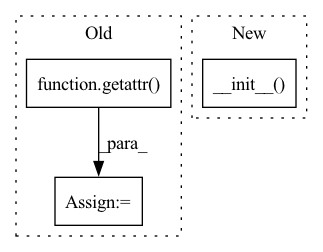

Pattern ID :27413
Before Change
conv: nn.Conv2d = self.features.conv1
if conv.in_channels != channel:
keys = ["out_channels", "kernel_size", "stride", "padding"]
kwargs = {key: getattr( conv, key) for key in keys}
self.features.conv1 = nn.Conv2d(in_channels=channel, bias=False, **kwargs)
After Change
def __init__(self, name: str = "resnet18", dataset: ImageSet = None,
data_shape: list[int] = None, **kwargs):
super().__init__(name=name, dataset=dataset, data_shape=data_shape, **kwargs)
if data_shape is None:
assert isinstance(dataset, ImageSet)
data_shape = dataset.data_shape
module_list: list[nn.Module] = []In pattern: SUPERPATTERN
Frequency: 3
Non-data size: 3
Instances Fragment ID: 81486713
Project Name: ain-soph/trojanzoo
Commit Name: c0b7a57a5ff182d7ea62daa6b51e1ec0e6de87d8
Time: 2021-07-20
Author: ain-soph@live.com
File Name: trojanvision/models/normal/resnet.py
M Class Name: _ResNet
N Class Name: _ResNet
M Method Name: __init__(4)
N Method Name: __init__(5)
M Parent Class: _ImageModel
N Parent Class: _ImageModel
M File Name: trojanvision/models/normal/resnet.py
N File Name: trojanvision/models/normal/resnet.py
M Start Line: 26
M End Line: 83
N Start Line: 20
N End Line: 43
Before Change
class CutPasteNet(nn.Module):
def __init__(self, encoder = "resnet18", pretrained = True, dims = [512,512,512,512,512,512,512,512,128], num_class = 3):
super().__init__()
self.encoder = getattr( models, encoder) (pretrained = pretrained)
last_layer= list(self.encoder.named_modules())[-1][0].split(".")[0]
setattr(self.encoder, last_layer, nn.Identity())
proj_layers = []
for d in dims[:-1]:After Change
class CutPasteNet(_CutPasteNetBase):
// forward outputs: (logits, embeds)
def __init__(self, encoder="resnet18", pretrained=True, dims=[512, 512, 512, 512, 512, 512, 512, 512, 128], num_class=3):
super().__init__( encoder, pretrained, dims, num_class)
return
def forward(self, x):
features = self.encoder(x) Fragment ID: 81486707
Project Name: lilityolyan/cutpaste
Commit Name: 7266df86ac2c99e58830182d164f7efba0e2fa83
Time: 2022-01-25
Author: lg93lggt@163.com
File Name: model.py
M Class Name: CutPasteNet
N Class Name: CutPasteNet
M Method Name: __init__(5)
N Method Name: __init__(5)
M Parent Class: _CutPasteNetBase
N Parent Class: nn.Module
M File Name: model.py
N File Name: model.py
M Start Line: 7
M End Line: 21
N Start Line: 49
N End Line: 50
Before Change
super(HyperpriorSynthesis, self).__init__()
cnn_kwargs = dict(kernel_size=5, stride=2, padding=2, output_padding=1)
self.activation = getattr( F, activation)
self.final_activation = final_activation
self.conv1 = nn.ConvTranspose2d(N, N, **cnn_kwargs)
self.conv2 = nn.ConvTranspose2d(N, N, **cnn_kwargs)After Change
The hyperprior over the standard latents is modelled as
a non-parametric, fully factorized density.
super(HyperpriorDLMM, self).__init__(n_channels=bottleneck_capacity)
assert bottleneck_capacity <= 128, "Will probably run out of memory!"
self.bottleneck_capacity = bottleneck_capacity
self.scale_lower_bound = scale_lower_bound Fragment ID: 81486709
Project Name: justin-tan/high-fidelity-generative-compression
Commit Name: bfea0331309355675403fc614470a5914697f92c
Time: 2020-08-18
Author: justan@student.unimelb.edu.au
File Name: src/network/hyperprior.py
M Class Name: HyperpriorDLMM
N Class Name: HyperpriorDLMM
M Method Name: __init__(7)
N Method Name: __init__(5)
M Parent Class: CodingModel
N Parent Class: nn.Module
M File Name: src/network/hyperprior.py
N File Name: src/network/hyperprior.py
M Start Line: 413
M End Line: 425
N Start Line: 427
N End Line: 464